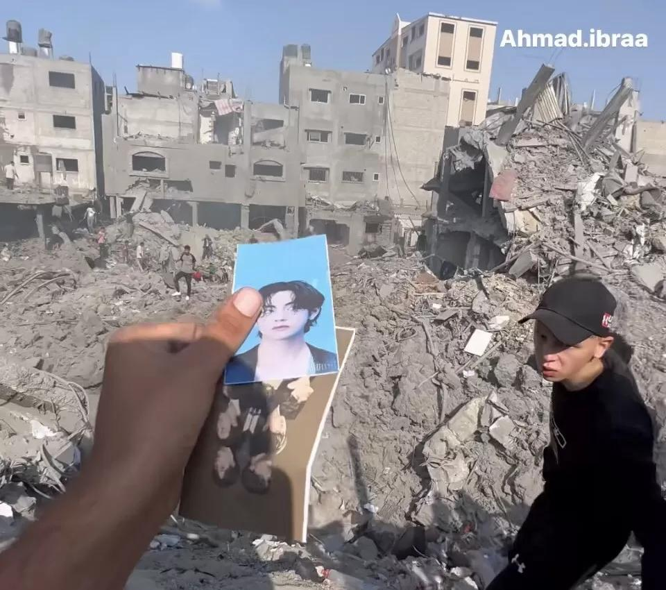

🇵🇸 In Loving Memory of the Anonymous Gaza Rubble ARMY
“An Eternal Light in the Grey Dust”
Location: Gaza Strip, Palestine
Timeline: November 2023
Favorite Member: V (Kim Taehyung)
Legacy: A heartbreaking reminder of innocent youth, whose beautiful devotion survived the wreckage of war and ignited a global wave of love and protection.
🌟 A Dream Hidden in the Darkness
Somewhere in the Gaza Strip, a young soul lived a life that mirrored millions of teenagers across the globe. Amidst the heavy, suffocating anxieties of living in a conflict zone, this anonymous fan found a beautiful sanctuary in the music of BTS. Her room was her safe haven, and her favorite songs were a shield against the frightening world outside.
She held a profound love for Kim Taehyung (V), finding comfort in his deep, soothing voice and warm persona. Like any dedicated ARMY, she carefully collected photocards and group prints, treating them as tiny, precious treasures of happiness. For her, these pieces of paper weren't just merchandise—they were anchors of hope, tangible proof of a world filled with art, color, and dreams of a peaceful tomorrow.
🕯️ The Day the Music Stopped
In November 2023, the unthinkable shattered that fragile sanctuary. A devastating military airstrike tore through her neighborhood, reducing her family’s residential building to a mountain of heavy, grey concrete and twisted metal. In an instant, her laughter, her dreams, and her voice were silenced forever beneath the collapsing weight.
Days later, Palestinian journalist Ahmad Ibraheem was filming the harrowing aftermath, capturing the grim reality of a home turned into a graveyard. But as the camera panned across the bleak, ash-covered wreckage, it caught a sudden, agonizing flash of color.

Buried deep in the dust lay a pristine plastic sleeve. Inside it were her treasures: the smiling faces of BTS and the distinct photocards of Taehyung.
The contrast was profoundly shattering. Surrounded by the brutal, concrete ruins of war lay the pure, innocent evidence of a young girl’s heart. She had held onto the things that brought her joy until her very last breath, leaving her small treasures behind to tell the world that she was here, she loved, and she existed.
🕊️ Honored in Privacy, Remembered in Love
To shield her surviving family and protect their privacy during an active war, her name, age, and face were never shared with the world. International fan coalitions like ARMY for Palestine chose to keep her identity anonymous, letting her represent the thousands of innocent children and youth lost to the violence.
Though she never got to hold a glowing lightstick in a stadium or hear Taehyung sing live, the global community wept for her. Fandom spaces were flooded with emotional letters promising that she would never be forgotten, declaring that she had fulfilled her promise and would remain a part of the "Purple Ocean" forever, watching down from a sky where pain no longer exists.
✈️ A Wave of Love Born from Grief
The heartbreak of seeing those dust-covered photocards transformed the global fandom from a state of mourning into a powerful force for survival. They refused to let her story end in the rubble:
Turning Pain into Life: Driven by the memory of the anonymous fan, global ARMYs mobilized overnight, successfully raising over $100,000 USD to send emergency food, clean water, and medical kits to the families still fighting to survive inside Gaza.
Voices for the Voiceless: Fans globally stood up to demand change, organizing streaming boycotts and sending protest trucks to entertainment headquarters, fiercely asserting that the fandom would always stand on the side of peace, humanity, and the protection of innocent lives.
💜 An Unbreakable Bond Beyond Borders
Last but not least, this tragedy reminds us that while wars are fought between nations and borders are drawn by governments, the conflicts remain among ministers and politicians. Yet, this dust-covered treasure proves that the people themselves are bound by something far deeper—a shared love for BTS, whether it is through their healing music, the joy of a Run BTS episode, or the messages of self-love they leave behind. At the end of the day, we are all ARMY. Despite the borders and the conflicts dividing our countries, we share the exact same love, care, and gentleness for one another. If only those ministers were ARMY too, perhaps these wars wouldn't even be needed, because there would only be love left to spread.
"They took her future, but they could not take her love. Beneath the dust of a broken world, her devotion remained unbroken—a silent, beautiful song of a soul who loved light until the very end."
Until we meet in another purple universe. May your memory be honored with love and care.